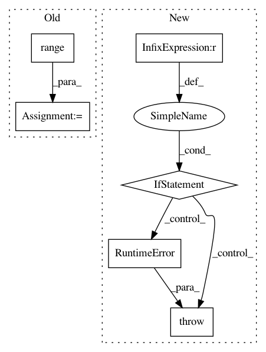

3b3f8bd00c463e441600673141ff2de608880c9a,deeppavlov/datasets/dialog_dataset.py,DialogDataset,batch_generator,#DialogDataset#Any#Any#Any#,58
Before Change
order = list(range(num_dialogs))
if shuffle:
random.shuffle(order)
for i in range((num_dialogs - 1) // batch_size + 1):
print("Getting dialogs =", [dialog_indices[o] for o in
order[i*batch_size:(i+1)*batch_size]])
yield list(itertools.chain.from_iterable(
_dialog(dialog_indices[o])\
for o in order[i*batch_size:(i+1)*batch_size]))
@staticmethod
def _dialog_indices(data):
dialog_indices = []
i, last_idx = 0, 0
After Change
@overrides
def batch_generator(self, batch_size: int, data_type: str = "train", shuffle: bool = True) -> Generator:
if batch_size != 1:
raise RuntimeError("Dialogs currently only support batch size of 1")
dialogs = self._dialogs(self.data[data_type])
num_dialogs = len(dialogs)
order = list(range(num_dialogs))
if shuffle:
In pattern: SUPERPATTERN
Frequency: 3
Non-data size: 6
Instances
Project Name: deepmipt/DeepPavlov
Commit Name: 3b3f8bd00c463e441600673141ff2de608880c9a
Time: 2018-02-05
Author: yoptar@gmail.com
File Name: deeppavlov/datasets/dialog_dataset.py
Class Name: DialogDataset
Method Name: batch_generator
Project Name: facebookresearch/pytext
Commit Name: 033f2625feff5428a243df1c1220830739dc7d3c
Time: 2020-10-02
Author: mikekg@fb.com
File Name: pytext/torchscript/module.py
Class Name: ScriptPyTextVariableSizeEmbeddingModule
Method Name: make_prediction
Project Name: cornellius-gp/gpytorch
Commit Name: 979b8c9efa551e8c948a4aca145367a2d87ac8d6
Time: 2019-02-26
Author: balandat@fb.com
File Name: gpytorch/distributions/multitask_multivariate_normal.py
Class Name: MultitaskMultivariateNormal
Method Name: rsample